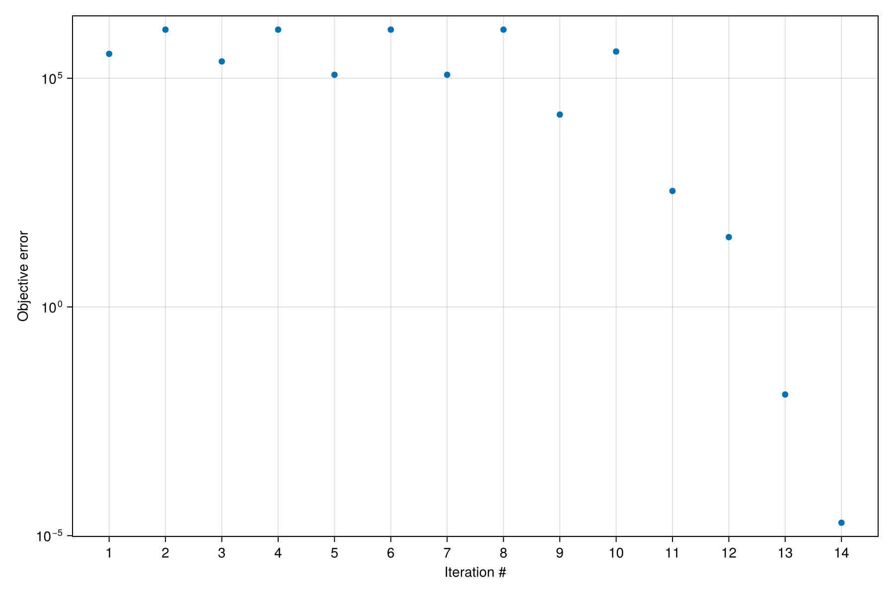

History matching of simulation models
We demonstrate history matching of a Direct Column Breakthrough (DCB) simulation model in Mocca. We leverage the powerful and flexible optimization functionality of Jutul to set up and perform the history matching. For more details about the DCB modelling, see the Haghpanah DCB example.
Import necessary modules
import Jutul
import Mocca
using Mocca.UnitsThe breakthrough
CO₂/N₂ fed at a constant interstitial velocity into a column of zeolite 13X full of nitrogen, with no heat transfer to the wall, as in the DCB example but on a coarser grid.
gas = Mocca.haghpanah_2013_gas()
feed = Mocca.Feed(gas; composition = (CO2 = 0.15, N2 = 0.85), temperature = 298.15, pressure = 1bar)
column = Mocca.Column(length = 1.0, radius = 0.1445, outer_radius = 0.162, porosity = 0.37,
axial_conductivity = 0.0903, inner_heat_transfer = 0.0, outer_heat_transfer = 0.0)
fs = Mocca.Flowsheet(gas, feed)
Mocca.add_bed!(fs, :Bed, Mocca.load_adsorbent("zeolite_13x_haghpanah_2013"), column; ncells = 50)
Mocca.add_device!(fs, :V_feed, :feed; at = (:Bed, :bottom))
Mocca.add_device!(fs, :V_product, :product; at = (:Bed, :top))
v_ref = 1.0 # interstitial velocity [m/s]
duration = 1000.0
process = Mocca.Process(fs, Mocca.Cycle([Mocca.Adsorb(duration; velocity = v_ref)]))Process: CO2/N2 feed at 1.0 bar, 298.15 K, capturing CO2
Bed: fixed bed of zeolite 13X, 50 cells
bottom V_feed (feed), from boundary at 1.0 bar
top V_product (product), to boundary at 1.0 bar
cycle of 1 stages, 1000.0 s:
adsorption 1000.0 s V_feed, V_product
We create a function for setting up new simulation cases from the value of the parameter we wish to tune, the feed velocity. The feed is the flow controller on V_feed, so a case for velocity v keeps the model, initial state and parameters of the process, and gives the controller the flow rate of v. The rate is the only thing that depends on v, and it accepts the automatic differentiation numbers the optimizer passes in.
bed = process.flowsheet[:Bed]
stage = only(Mocca.stages(process))
state0 = Mocca.initial_state(process)
function setup_case(prm, step_info = missing)
settings = copy(stage.settings)
rate = Mocca.interstitial_flow_rate(bed, prm["velocity"])
settings[:V_feed] = merge(settings[:V_feed], (law = Mocca.VolumetricFlow(rate),))
forces, dt = Mocca.setup_schedule(process.flowsheet, process.model, [Mocca.Stage(stage.name, stage.duration, settings)];
max_dt = 20.0)
return Mocca.MoccaCase(process.model, dt, forces; state0 = state0, parameters = process.parameters)
end;Create synthetic reference data
case_ref = setup_case(Dict("velocity" => v_ref));Configure simulator which will be used in the history matching. The time step selector limits the change of the bed's variables per step.
sim, cfg = Mocca.setup_process_simulator(case_ref.model, case_ref.state0, case_ref.parameters;
timestep_selector_cfg = (Bed = (y = 0.01, Temperature = 10.0, Pressure = 10.0),),
initial_dt = 1.0,
output_substates = true,
info_level = -1
);Run reference simulation to generate "ground truth" data from the result
states, timesteps_out = Mocca.simulate_process(case_ref;
simulator = sim,
config = cfg
);
times_ref = cumsum(timesteps_out)
total_time = times_ref[end]
last_cell_idx = Jutul.number_of_cells(bed.domain)
qCO2_ref = map(s -> s[:Bed][:AdsorbedConcentration][1, last_cell_idx], states)
qCO2_ref_by_time = Jutul.get_1d_interpolator(times_ref, qCO2_ref);Setting up and solving the optimization problem
We define a suitable objective function to quantify the match between our simulations and the reference solution. Here we choose deviation of adsorbed CO2 in the last grid cell.
function objective_function(model, state, dt, step_info, forces)
current_time = step_info[:time]
q_co2 = state[:Bed][:AdsorbedConcentration][1, last_cell_idx]
q_co2_ref = qCO2_ref_by_time(current_time)
v = dt/total_time*(q_co2 - q_co2_ref)^2
return v
end;Perturb the known velocity to form our initial guess for the optimization
prm_guess = Dict("velocity" => 1.5 * v_ref);Activate the velocity as a free parameter
dprm = Jutul.DictOptimization.DictParameters(prm_guess)
Jutul.DictOptimization.free_optimization_parameter!(dprm, "velocity"; rel_min = 0.001, rel_max = 100.0)DictParameters with 1 parameters (1 active), and 0 multipliers:
Active optimization parameters
┌──────────┬───────────────┬───────┬────────┬───────┐
│ Name │ Initial value │ Count │ Min │ Max │
├──────────┼───────────────┼───────┼────────┼───────┤
│ velocity │ 1.5 │ 1 │ 0.0015 │ 150.0 │
└──────────┴───────────────┴───────┴────────┴───────┘
No inactive optimization parameters.
No multipliers set.
Run the optimization
prm_opt = Jutul.DictOptimization.optimize(dprm, objective_function, setup_case;
config = cfg,
max_it = 10,
obj_change_tol = 1e-6,
solution_history = true
);Optimization: Starting calibration of 1 parameters.
Optimization: Setting up adjoint storage.
Optimization: Finished setup in 2.933915086 seconds.
Optimization: Adjoint solve took 13.423783498 seconds.
Optimization: Objective #1: 3.41251e+05, gradient 2-norm: 5.60913e+05
It. | Objective | Proj. grad | Linesearch-its
-----------------------------------------------
0 | 6.0839e-01 | 1.5000e+02 | -
Optimization: Adjoint solve took 0.320343878 seconds.
Optimization: Objective #2: 1.15577e+06 (f/f0=3.387e+00), gradient 2-norm: 1.57670e-06
Optimization: Adjoint solve took 1.523378353 seconds.
Optimization: Objective #3: 2.33199e+05 (f/f0=6.834e-01), gradient 2-norm: 7.11058e+05
Optimization: Adjoint solve took 0.251311495 seconds.
Optimization: Objective #4: 1.15577e+06 (f/f0=3.387e+00), gradient 2-norm: 1.57670e-06
Optimization: Adjoint solve took 1.466107465 seconds.
Optimization: Objective #5: 1.19065e+05 (f/f0=3.489e-01), gradient 2-norm: 8.88513e+05
Optimization: Adjoint solve took 0.280975854 seconds.
Optimization: Objective #6: 1.15577e+06 (f/f0=3.387e+00), gradient 2-norm: 1.57670e-06
LBFGS: Line search unable to succeed in 5 iterations ...
Optimization: Adjoint solve took 1.466940192 seconds.
Optimization: Objective #7: 1.19065e+05 (f/f0=3.489e-01), gradient 2-norm: 8.88513e+05
1 | 2.1227e-01 | 1.5000e+02 | 5
Optimization: Adjoint solve took 0.260800825 seconds.
Optimization: Objective #8: 1.15577e+06 (f/f0=3.387e+00), gradient 2-norm: 1.57670e-06
Optimization: Adjoint solve took 1.423778321 seconds.
Optimization: Objective #9: 1.60637e+04 (f/f0=4.707e-02), gradient 2-norm: 6.24670e+05
2 | 2.8638e-02 | 2.3760e+02 | 2
Optimization: Adjoint solve took 1.569760497 seconds.
Optimization: Objective #10: 3.84195e+05 (f/f0=1.126e+00), gradient 2-norm: 2.31961e+06
Optimization: Adjoint solve took 1.454158567 seconds.
Optimization: Objective #11: 3.43361e+02 (f/f0=1.006e-03), gradient 2-norm: 1.05343e+05
3 | 6.1215e-04 | 1.6705e+02 | 2
Optimization: Adjoint solve took 1.483733063 seconds.
Optimization: Objective #12: 3.35912e+01 (f/f0=9.844e-05), gradient 2-norm: 3.17097e+04
4 | 5.9887e-05 | 2.8171e+01 | 1
Optimization: Adjoint solve took 1.474537542 seconds.
Optimization: Objective #13: 1.21890e-02 (f/f0=3.572e-08), gradient 2-norm: 6.35802e+02
5 | 2.1731e-08 | 8.4798e+00 | 1
Optimization: Adjoint solve took 1.896931699 seconds.
Optimization: Objective #14: 1.91768e-05 (f/f0=5.620e-11), gradient 2-norm: 2.52183e+01
6 | 3.4189e-11 | 1.7003e-01 | 1
Optimization: Finished in 47.814828606 seconds.We can see a clear reduction of the objective function value throughout the optimization iterations, indicating a close match between the reference solution and our simulation.
f = Mocca.plot_optimization_history(dprm)
We can look at the optimization result:
dprmDictParameters with 1 parameters (1 active), and 0 multipliers:
Active optimization parameters
┌──────────┬───────────────┬───────┬────────┬───────┬─────────────────┬────────┐
│ Name │ Initial value │ Count │ Min │ Max │ Optimized value │ Change │
├──────────┼───────────────┼───────┼────────┼───────┼─────────────────┼────────┤
│ velocity │ 1.5 │ 1 │ 0.0015 │ 150.0 │ 1.0 │ -33.0% │
└──────────┴───────────────┴───────┴────────┴───────┴─────────────────┴────────┘
No inactive optimization parameters.
No multipliers set.
and see that the value matches the reference velocity
v_ref1.0Check size of objective mismatch
dprm.history.objectives14-element Vector{Float64}:
341251.45993656665
1.155766821828556e6
233198.94399003938
1.155766821828556e6
119064.67405377401
1.155766821828556e6
119064.67405377401
1.155766821828556e6
16063.68946947294
384194.6531237283
343.36124992751945
33.59118728375403
0.01218904213079271
1.917683357238182e-5Example on GitHub
If you would like to run this example yourself, it can be downloaded from the Mocca.jl GitHub repository.
This page was generated using Literate.jl.